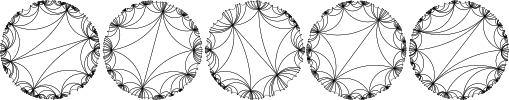
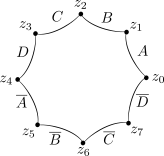
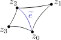
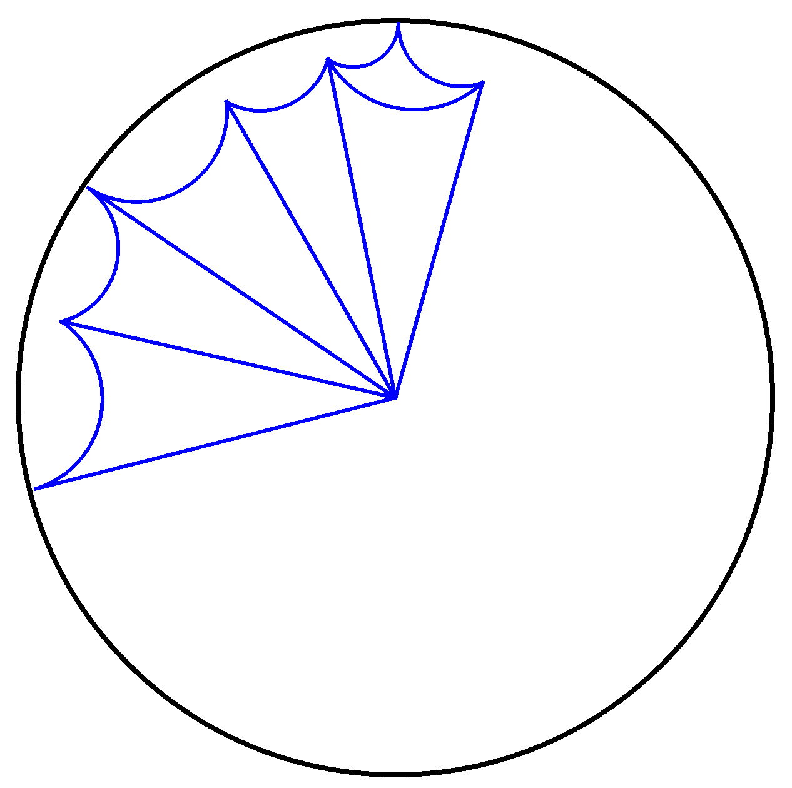
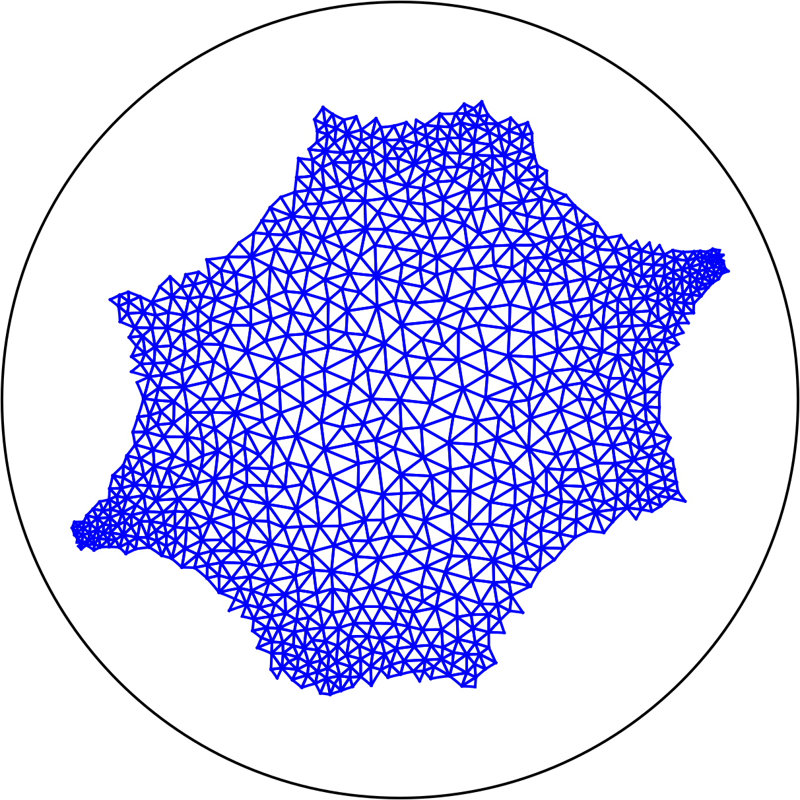
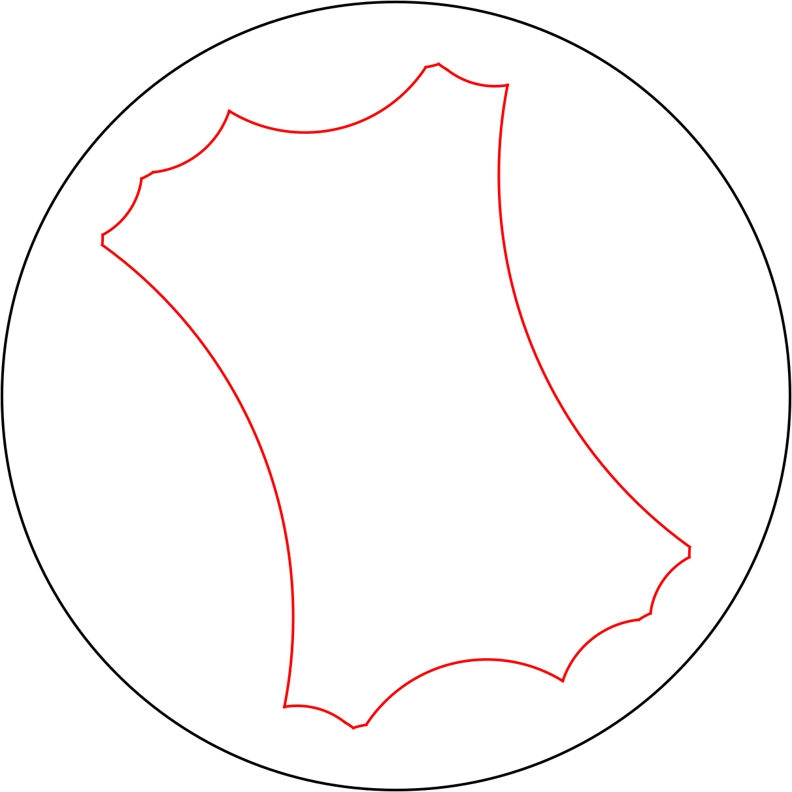

- Generated by
 1.17.0
1.17.0
|
CGAL 6.3 - 2D Triangulations on Hyperbolic Surfaces
|

This package introduces data structures and algorithms for triangulations of closed orientable hyperbolic surfaces. Such triangulations can be constructed from a surface given by a convex fundamental domain (see Section Fundamental Domains and Triangulations). A method is offered that randomly generates such domains for surfaces of genus two. On the other hand, the package works for surfaces of any genus that may be provided by the user either as a fundamental domain or as an already computed triangulation. For triangulations, we provide a Delaunay flip algorithm and a method to construct of a portion of the lift of the triangulation in the Poincaré disk model of the hyperbolic plane. For Delaunay triangulations, we provide in addition methods for point location, point insertion, and the computation of an \( \varepsilon \)-net of the hyperbolic surface.
For the case of the Bolza surface, which is the most symmetric surface of genus two, we refer the user to the specific package 2D Periodic Hyperbolic Triangulations.
We assume some familiarity with basic notions from covering space theory and from the theory of hyperbolic surfaces. See for instance [2][3]. The Poincaré disk \( \mathbb{D} \) is a model of the hyperbolic plane whose point set is the open unit disk of the complex plane \( \mathbb{C} \). In this package, every hyperbolic surface \( S \) is closed (compact and without boundary) and orientable. The Poincaré disk \( \mathbb{D} \) is a universal covering space for \( S \), whose projection map \( \pi: \mathbb{D} \to S \) is a local isometry. For a point \( x \in S \), the infinite set \( \pi^{-1}(x) \) consists of lifts of \( x \), denoted \( \widetilde x \). This notion extends to paths and triangulations of S that can be lifted in \( \mathbb{D} \).
Let \( S \) be a hyperbolic surface. For representing \( S \), we cut it into topologically simple pieces. For a graph \( G \) embedded on \( S \), a face is a connected component of \( S \setminus G \). A graph \( G \) embedded on \( S \) defines a cellular decomposition of \( S \) if every face is a topological disk. In this document, every edge of a graph \( G \) embedded on \( S \) is a geodesic on \( S \). We consider two types of cellular decompositions of \( S \):
A decomposition of \( S \) that has only one face is a classical representation of the surface. Cutting \( S \) open along the edges of such a graph \( G \) results in a hyperbolic polygon \( P \) that is a fundamental domain for \( S \). Each edge of \( G \) is split into a pair of edges in \( P \). Every hyperbolic surface admits a fundamental domain \( P \) that is convex, meaning that the interior angles of \( P \) do not exceed \( \pi \).
A decomposition defined by a graph \( G \) is a triangulation of \( S \) if every face of \( G \) is a triangle: it is bounded by three edges of \( G \). Observe that this definition allows for triangulations with only one vertex. A triangulation of \( S \) can be obtained from a convex fundamental domain \( P \) of \( S \) by triangulating the interior of \( P \), and by gluing back the boundary edges that are paired in \( P \). The assumption that \( P \) is convex ensures that the interior of \( P \) can be triangulated naively by insertion of any maximal set of pairwise interior disjoint arcs of \( P \).
In the Euclidean setting, it is convenient for exact computations with distances to work with squared distances instead of distances so that to avoid a square root. Indeed, the squared Euclidean distance is a polynomial function of the point's coordinates, it is thus exactly computable with exact ring operations. In the hyperbolic setting, using the expression of the hyperbolic distance \( d_h(x,y)=arccosh (1+2\frac{|x-y|^2}{(1-|x|^2)(1-|y|^2)}) \) for complex numbers \( x,y \) in the Poincaré disk, it becomes convenient to work with \( \cosh \) of distances. The hyperbolic cosine of a hyperbolic distance is a rational function of the point's coordinates, it is thus exactly computable with exact field operations. For instance, for a fundamental domain to be valid, both sides of a side pair must have the same length. This comparison is made exact by comparing the cosines of the hyperbolic lengths with an exact field type for the coordinates of the vertices.
In order to perform fast and exact computations with a fundamental domain, every vertex must be a complex number whose type supports fast and exact computations. Under this constraint, it is still a research problem to generate domains of surfaces of genus greater than two. In genus two, this package generates fundamental domains whose vertices belong to \( \mathbb{Q} + i \mathbb{Q} \) (their real and imaginary parts are rational numbers). The exact generation process can be found in [5], together with a proof that the surfaces that can be generated in this way are dense in the space of hyperbolic surfaces genus two.
Computations in a hyperbolic setting involve hyperbolic trigonometry and thus induce some exponential behavior. This is why an exact field type is required for our geometric traits classes. As explained above, hyperbolic trigonometric functions cannot be exact. When these are used, it is explicitly mentioned when the results are approximations.
We detail below the data structures for polygonal domains, general triangulations and Delaunay triangulations. A triangulation is represented by an enriched CGAL::Combinatorial_map with complex number attributes on edges that encode the metric of the surface. Additionally, a Delaunay triangulation has an anchor attribute on each face representing a lift of triangles.
We represent every fundamental domain as a polygon in the Poincaré disk, given by the list of its vertices in counterclockwise order and by the list of its side pairings. The sides of a pair must have the same length.
This package can generate a random convex fundamental domain \( P \) of a surface of genus two, with eight vertices \( z_0, \dots, z_7 \in \mathbb{C} \). The vertices and the sides are in counterclockwise order, the side between \( z_0 \) and \( z_1 \) is \( A \), the side between \( z_4 \) and \( z_5 \) is \( \overline{A} \) and so on as on Figure 46.1. The side pairings are \( A \) with \(\overline{A} \) , \( B \) with \( \overline{B} \) , \( C \) with \( \overline{C} \) and \( D \) with \( \overline{D} \).
These octagons are symmetric, i.e. \( z_i = -z_{i+4} \) for every \( i \), where indices are modulo eight. Such octagons are described in [1].

Figure 46.1 Fundamental convex polygonal domain of a genus two surface.
Our representation is edge-based instead of the usual CGAL::Triangulation_data_structure_2 used for instance in the package 2D Periodic Hyperbolic Triangulations. This edge-based representation is more intrinsic to the surface and can handle non-simplicial triangulations, for instance a triangulation with only one vertex. We represent a triangulation \( T \) of a hyperbolic surface by an instance of CGAL::Combinatorial_map whose edges have complex number attributes that are cross ratios (defined shortly in the following). While the triangulation \( T \) is unambiguously determined by the combinatorial map and its cross ratios, the internal representation of \( T \) contains an additional data: the anchor, to be able to lift the triangulation in the Poincaré disk \( \mathbb{D} \). The anchor is a lift \( \widetilde t \) in \( \mathbb{D} \) of a triangle \( t \) of \( T \). The anchor is represented by the three vertices \( \widetilde v_0, \widetilde v_1, \widetilde v_2 \) of \( \widetilde t \) in \( \mathbb{D} \), and by the dart in the combinatorial map of \( T \) corresponding to the oriented edge \( v_0v_1 \). A lift function is provided that computes a lift of each triangle of \( T \) in the Poincaré disk \( \mathbb{D} \). It starts from the anchor and then recursively constructs lifts of neighboring triangles using the cross ratios. See [5] for details.
The attribute of an edge \( e \) of \( T \) is the complex number \( R_T(e) \in \mathbb{C} \) called the cross ratio of \( e \) in \( T \), defined as follows. Consider the lift \( \widetilde T \) of \( T \) in the Poincaré disk \( \mathbb{D} \). In \( \widetilde T \), let \( \widetilde e \) be a lift of \( e \), see Figure 46.2. Orient \( \widetilde e \) arbitrarily, and let \( z_0 \in \mathbb{D} \) and \( z_2 \in \mathbb{D} \) be respectively the source and target vertices of \( \widetilde e \). In \( \widetilde T \), consider the triangle on the right of \( \widetilde e \), and let \( z_1 \in \mathbb{D} \) be the vertex distinct from \( z_0 \) and \( z_2 \) of this triangle. Similarly, consider the triangle on the left of \( \widetilde e \), and let \( z_3 \in \mathbb{D} \) be the vertex distinct from \( z_0 \) and \( z_2 \) of this triangle. Then \( R_T(e) = (z_3-z_1)(z_2-z_0) / ((z_3-z_0)(z_2-z_1)) \). This definition does not depend on the choice of the lift \( \widetilde e \), nor on the orientation of \( \widetilde e \). See [5] for details.

Figure 46.2 Computation of the cross ratio of an edge.
Let \( T \) be a triangulation of a hyperbolic surface. An edge \( e \) of \( T \) satisfies the Delaunay criterion if the imaginary part of its cross ratio \(R_T(e)\) is non-positive. This definition is equivalent to the usual formulation for the triangulation lifted in \( \mathbb{D} \): there exists a disk containing \( \widetilde e \) that does not contain any other vertices of \( \widetilde T \) in its interior. Then \( T \) is a Delaunay triangulation if every edge of \( T \) satisfies the Delaunay criterion. If an edge \(e \) of \( T \) does not satisfy the Delaunay criterion, then \(e \) is called Delaunay flippable, and then the two triangles incident to \( e \) form a strictly convex quadrilateral, so \( e \) can be deleted from \( T \) and replaced by the other diagonal of the quadrilateral. This operation is called a Delaunay flip. When a flip occurs, the cross ratios of the involved edges are modified via simple formulas. The Delaunay flip algorithm flips edges that do not satisfy the Delaunay criterion until no more edges violate the criterion, with no preference on the order of the flips. This algorithm terminates and outputs a Delaunay triangulation of \( S \) [4].
NEW SECTION
The notion of \( \varepsilon \)-net formalizes the idea of a "well-distributed" sampling of a metric space, in our case, a hyperbolic surface.
Let \( (X, d) \) be a metric space and \( \varepsilon > 0 \). A subset \( P \subset X \) is:
The class CGAL::Delaunay_triangulation_on_hyperbolic_surface_2 contains the method CGAL::Delaunay_triangulation_on_hyperbolic_surface_2::construct_epsilon_net() that tries to compute an \( \varepsilon \)-net of a hyperbolic surface, starting from an \( \varepsilon \)-packing (usually, a Delaunay triangulation with a single vertex). The construction might not result in an \( \varepsilon \)-net (see next section TODO ADD REF to 4.3), but the method returns a Boolean indicating whether the result is an \( \varepsilon \)-net. If the result is not an \( \varepsilon \)-net, the methods CGAL::Delaunay_triangulation_on_hyperbolic_surface_2::is_epsilon_covering() and CGAL::Delaunay_triangulation_on_hyperbolic_surface_2::is_epsilon_packing() can be used to diagnose which properties fail.
The \( \varepsilon \)-net algorithm is a Delaunay refinement algorithm that maintains a Delaunay triangulation. It starts with a Delaunay triangulation of an \( \varepsilon \)-packing of S, note that a Delaunay triangulation with a single vertex always satisfies this condition for any \( \varepsilon >0\). In a nutshell, as long as there is a triangle with a circumradius larger than \(\varepsilon \) in the triangulation, its circumcenter is inserted and the triangulation is updated: the triangle in which the circumcenter lies is first split into three new triangles, then the Delaunay property is retrieved using the Delaunay flip algorithm.
As explained above, the \( \varepsilon \)-net algorithm iteratively inserts circumcenters of triangles as new vertices of the triangulation. The coordinates of a circumcenter is in an algebraic extension of degree 2 with respect to the coordinates of the points defining the triangle. To avoid inserting points with coordinates in algebraic extensions, each coordinate of a circumcenter is approximated and converted back to the number type provided by the user. The drawback is that the insertion of this approximated circumcerter, instead of the exact one, may fail to produce an \( \varepsilon \)-net. For efficiency reasons, the algorithm does not check the \( \varepsilon \)-net property after each approximated circumcenter insertion. Instead, it only checks the correctness at the end. Note that even when the returned point set is not an \( \varepsilon \)-net for the requested \( \varepsilon \), it is likely to still be a packing for a slightly smaller value than \( \varepsilon \) and a covering for a slightly larger value than \( \varepsilon \).
The concept HyperbolicSurfaceDelaunayTraits_2 handles the circumcenter approximation via the method Construct_approximate_hyperbolic_circumcenter_2(). Using the class CGAL::Hyperbolic_surface_Delaunay_traits_2 with the CGAL::Gmpq number type, the approximation precision is chosen via the function set_circumcenter_approximation_precision(). If another number type is used, the approximation uses the function CGAL::to_double() and there are no general guarantees whatsoever. When the number type is CGAL::Gmpq, the integer p given to the function set_circumcenter_approximation_precision() means that computations are done with p times the double precision. More precisely each coordinate of an exact circumcenter is rounded to a fixed precision floating-point number of type CGAL::Gmpfr before being converted to a CGAL::Gmpq. The precision of the CGAL::Gmpfr numbers involved is \( p\times 53 \) bits, where 53 bits is the precision of a double. The precision \( p=1 \) usually outputs correct \( \varepsilon \)-nets for hyperbolic surfaces of genus 2 or 3 with a large systole, but a higher precision is required to obtain a correct \( \varepsilon \)-net on surfaces of higher genus.
Additionally, the method CGAL::Delaunay_triangulation_on_hyperbolic_surface_2::packing_value() returns the optimal packing value up to double precision. It is computed as a lower bound on the length of the closest pair of vertices of the triangulation. The method CGAL::Delaunay_triangulation_on_hyperbolic_surface_2::covering_value() returns the optimal covering value up to double precision. It is computed as an upper bound on the largest radius of the circumcircles of all triangles of the triangulation.
The concept ComplexNumber describes a complex number type modeled by CGAL::Complex_number. Complex numbers are used to encode the cross ratios, for the coefficients of isometries and implicitly to work with points in the Poincaré disk. Most classes of the package are templated by the concepts HyperbolicSurfaceTraits_2 or HyperbolicSurfaceDelaunayTraits_2. The concept HyperbolicSurfaceTraits_2 is a refinement of HyperbolicDelaunayTriangulationTraits_2 and is modeled by CGAL::Hyperbolic_surface_traits_2. It defines the geometric objects (points, segments...) forming the lifted triangulation in the Poincaré disk and adds the computation of the cosine of the hyperbolic distance between two points. The concept HyperbolicSurfaceDelaunayTraits_2 is a refinement of HyperbolicSurfaceTraits_2 and adds the tools to handle approximate computations, in particular it adds the computation of an approximate circumcenter that is a critical tool in the epsilon net algorithm.
The package offers four main classes:
The secondary class CGAL::Hyperbolic_isometry_2 defines isometries in the Poincaré disk together with operations to work with them.
The function CGAL::Triangulation_on_hyperbolic_surface_2::lift() computes a lift of each triangle in the hyperbolic plane, enabling its visualization (see Figure 46.3).

Figure 46.3 Lift, in the Poincaré disk, of a Delaunay triangulation of a genus two hyperbolic surface with one vertex (from Triangulation_on_hyperbolic_surface_2_demo.cpp).


This first example generates a convex fundamental domain of a surface of genus two, triangulates the domain using the class CGAL::Triangulation_on_hyperbolic_surface_2, applies the Delaunay flip algorithm to the resulting triangulation, saves and prints the Delaunay triangulation.
Example: Triangulation_on_hyperbolic_surface_2/Triangulation_on_hyperbolic_surface_2.cpp
This example generates a convex fundamental domain of a surface of genus two, construct its Delaunay triangulation using the class CGAL::Delaunay_triangulation_on_hyperbolic_surface_2, computes an \(\varepsilon \)-net, locates a query point in the triangulation. Then a surface of genus 5 is generated showing that a higher approximation precision for the circumcenters is mandatory for the epsilon net algorithm to output correct results. Example: Triangulation_on_hyperbolic_surface_2/Delaunay_triangulation_on_hyperbolic_surface_2.cpp
This package implements the Delaunay flip algorithm described in the hyperbolic setting by Vincent Despré, Jean-Marc Schlenker and Monique Teillaud in [4], using the data structure for representing triangulations presented in [5]. The generation of domains is implemented as described in Vincent Despré, Loïc Dubois, Benedikt Kolbe and Monique Teillaud in [5], based on results of Aline Aigon-Dupuy, Peter Buser, Michel Cibils, Alfred F Künzle and Frank Steiner [1]. The \( \varepsilon \)-net algorithm is implemented as described in Vincent Despré, Camille Lanuel, Marc Pouget and Monique Teillaud in [6] and detailed in Camille Lanuel PhD thesis [7] The code and the documentation of the package were written by Loïc Dubois and Camille Lanuel, under regular discussions with Vincent Despré, Marc Pouget and Monique Teillaud. The authors acknowledge support from the grants SoS, MIN-MAX and Abysm of the French National Research Agency ANR.